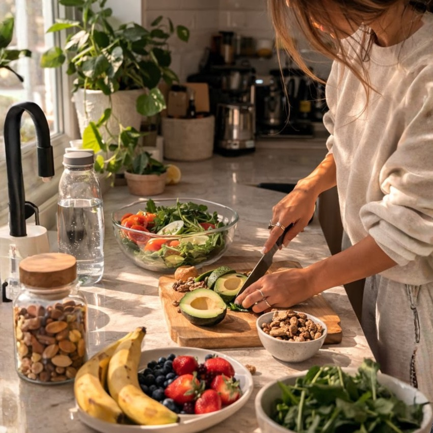
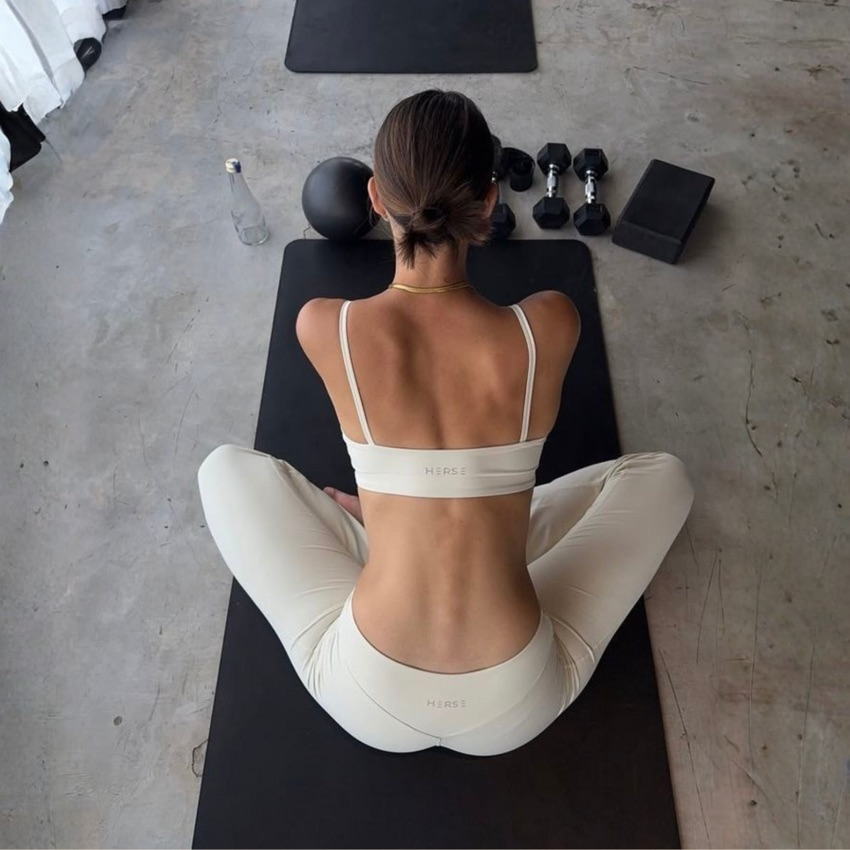
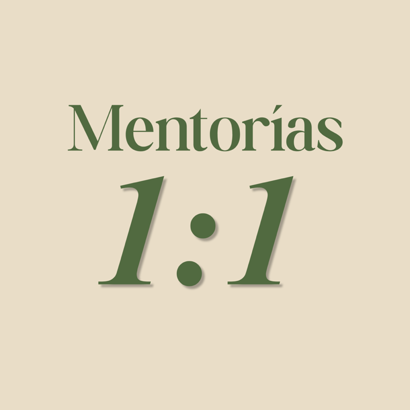

Un espacio para priorizar tu salud
Confianza, seguridad y conexión para mujeres decididas a cambiar su realidad.
Ayudo a mujeres a transformar su salud, su cuerpo y su relación consigo mismas a través de un enfoque integral basado en nutrición, fuerza, hábitos y medicina del estilo de vida.
Quién soy
Hola, soy la Dra. M.
Creé Cuerpo Presente para poder ser la guía que me hubiese gustado tener, el acompañamiento que alguna vez necesité y no encontré. Ahora es el que vos necesitás.
Alguna vez fui la mujer que no entendía sus síntomas, regulaba sus emociones a través de la comida y veía cambios en su cuerpo que no comprendía.
Pasé años en un círculo: restringiendo, sobre-entrenando, sintiendo que siempre tenía que dar más.
Mi cuerpo reflejaba exactamente cómo me sentía: ansiedad, exigencia, agotamiento… y no fue hasta que me comprometí con mi salud desde un lugar realmente integral que mi cuerpo empezó a responder.
El Método
El Método Dra. M.
Mi método integra tres pilares que trabajan en conjunto: alimentación, entrenamiento y mentalidad. Todo cambio auténtico requiere una base sólida.

Materia Prima
El objetivo no es restringir sino nutrir. Es diseñar un plan basado en evidencia que funcione con tu vida real, sin culpa y sin contar calorías.
Ejercicio y Recuperación
Es necesario un entrenamiento de fuerza adaptado a tu cuerpo y tu momento. No sirven las rutinas genéricas. Movimiento que transforma y que podés sostener.

Hábitos y Conducta
Los hábitos no se construyen con fuerza de voluntad. Se construyen con estrategia, acompañamiento y comprensión profunda de cómo funciona tu mente.
Tu cuerpo es una representación de cómo te sentís con vos misma.
Cuando dejás de pelear contra tu cuerpo, de castigarte por no ser perfecta y de empezar una y otra vez cada lunes, algo cambia. Cuando aprendés a cuidarte y a confiar nuevamente en vos, tu cuerpo responde.
Ocurre cuando la alimentación, el ejercicio, la organización y la mentalidad empiezan a trabajar a tu favor.
Programa Principal
Un programa de recomposición corporal diseñado para mujeres profesionales que quieren transformar su cuerpo y su salud de forma sostenible, con acompañamiento médico personalizado en cada paso.
Conocé Cuerpo PresenteTestimonios
Historias de mujeres que alguna vez se sintieron como vos
Y decidieron hacer las cosas diferente.
Por primera vez sentí que no tenía que hacerlo sola. Llegué cansada de empezar de nuevo cada semana. Con Mayra encontré una estrategia clara, acompañamiento real y hábitos que pude sostener. Hoy me siento más fuerte y mucho más segura de mí misma.
Dejé de pelearme con mi cuerpo. Llegué buscando un cambio físico, pero encontré mucho más — la combinación de profesionalismo, empatía y acompañamiento de Mayra me ayudó a recuperar la confianza en mí misma y construir hábitos que hoy forman parte de mi vida.
Volví a disfrutar de la comida sin culpa ni miedo. Lo que más valoro de este proceso fue sentirme escuchada y comprendida. Mayra me ayudó a construir una relación mucho más tranquila con la alimentación y conmigo misma.
Encontré respuestas donde antes solo había frustración. Después de años conviviendo con síntomas digestivos, encontré una profesional que miró mi salud de manera integral. Gracias a su acompañamiento, hoy me siento mejor que nunca.
Además de Cuerpo Presente
Otras propuestas para mejorar tu salud

Un acompañamiento médico individual orientado a mejorar tu salud, aliviar síntomas y generar cambios sostenibles en tu estilo de vida.
Ver Mentorías 1:1 →En esta sección encontrás herramientas para iniciar tu proceso, a tu ritmo, para que puedas ir sumando hábitos más saludables a tu rutina.
Ver Cursos & Talleres →